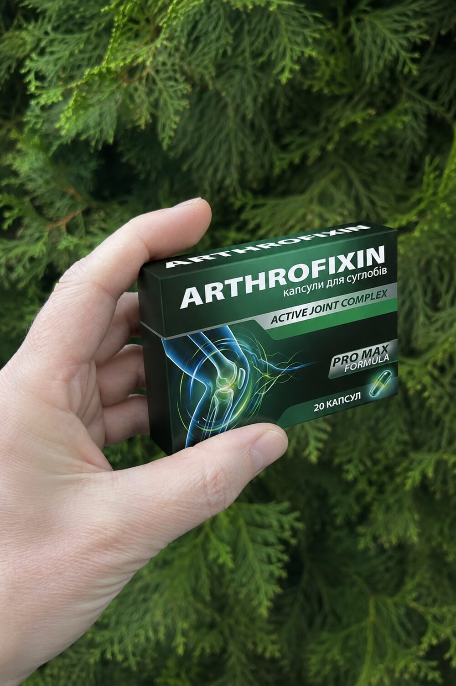

8 із 10 людей відчувають біль у колінах, плечах або попереку. Більшість списує це на погоду. Лікарі кажуть: процес руйнування хряща вже запущений.
Чому біль після 40 — це вже не «просто вік» і не «погода»
За статистикою, після 40 років біль у суглобах або попереку відчувають 8 із 10 людей. Більшість списує це на втому, зміну погоди чи «нормальний вік». Але часто це перші ознаки порушень в опорно-руховому апараті.
Суглоби та міжхребцеві диски не відновлюються самі по собі. Якщо процес руйнування хряща вже почався, без правильної підтримки він лише посилюється.
Спочатку біль з’являється після навантаження — город, сходи, довга дорога. Потім — у стані спокою, вночі, зранку. Згодом обмежуються рухи, з’являються запалення, оніміння, хрускіт. На цьому етапі звичайні мазі й знеболювальні вже часто не дають стійкого ефекту.
Українська цілителька Наталя Земна неодноразово наголошувала: біль у суглобах — це не привід «просто терпіти до пенсії». Це сигнал, що хрящова тканина потребує уваги і підтримки, поки зміни ще можна сповільнити без крайніх методів.

Проблеми із суглобами рідко стартують із сильного болю
Найчастіше це ледь помітні сигнали, які легко ігнорувати. Спочатку з’являється:
На цьому етапі більшість людей переконують себе, що це втома, погода або «нічого страшного». Але саме тоді процес уже запущений: хрящова тканина втрачає еластичність, зменшується кількість «змазки» в суглобі, навантаження на кістки й зв’язки зростає.
Що відбувається далі. Біль з’являється частіше і триває довше. З’являється набряк. Рухи стають обмеженими — складніше нахилятися, підніматися сходами, довго стояти чи сидіти. У випадку з хребтом міжхребцеві диски можуть почати тиснути на нерви, викликаючи різкий простріл у поперек або ногу.
Багато хто спочатку просто «терпить». П’ють знеболювальне «від випадку до випадку», мажуть маззю перед сном, відкладають візит до лікаря. Минає місяць, пів року, рік — і вже важко без таблетки піднятися з ліжка або пройти квартал до магазину.
Те, що колись було «терпимим дискомфортом», перетворюється на стан, який обмежує повсякденне життя: роботу, сон, прогулянки, турботу про близьких, можливість жити без постійного страху болю.
Важливо. Якщо зараз ви відчуваєте біль у суглобах чи спині — це сигнал організму про початок змін у хрящах. Зволікання рідко робить ситуацію кращою. Суглоби й диски не відновлюються «самі по собі», якщо процес уже пішов.
2–3 пункти зі списку — привід не чекати «поки само мине»
Важко «розійтися» після сну. Коліна, пальці, поперек ніби «заклинило» на 15–30 хвилин.
При присіданні, підйомі сходами, поворотах — звук і дискомфорт у суглобах.
Спочатку терпимо. Потім болить довше. Згодом — навіть у стані спокою.
Суглоб «наливається», важко зігнути ногу чи підняти руку над головою.
Нахили, довге сидіння, підйом важкого — різкий або тягнучий біль, інколи з віддачею в ногу.
Сходи, прогулянка, робота по дому стають випробуванням. З’являється страх руху.
Тисячі людей місяцями, а то й роками терплять біль і витрачають гроші на засоби, які дають лише короткий ефект. Ось три найпоширеніші підходи — і їхні межі.
1. Масажі, компреси, фізіотерапія. Можуть покращити кровообіг і зняти напругу в м’язах, але не відновлюють хрящ. Як тільки людина припиняє процедури, дискомфорт часто повертається.
2. Знеболювальні та гормональні уколи. Прибирають біль на певний час. Руйнування суглоба при цьому може тривати, а людина цього не відчуває, доки не стане пізно. Тривалий прийом знеболювальних дає навантаження на печінку, нирки та шлунок. Гормональні препарати зменшують запалення, але при частому застосуванні можуть послаблювати кісткову тканину.
3. Операція та протез. Крайній випадок. Дорого, довге відновлення, ризики ускладнень. Не завжди гарантує повне повернення рухливості. Багато хто погоджується на хірургію, навіть не спробувавши м’якші варіанти підтримки вдома.
Причина, чому «просто потерпіти» не працює: якщо не підтримувати хрящову тканину і «змазку» суглоба, механічне тертя триває. Кістки ближче контактують одна з одною, запалення повторюється, рухливість падає.
Саме тому все більше людей шукають комплексний підхід вдома — без операції, без наркозу й без багаторазових поїздок у клініку. Підхід, спрямований не лише на «заглушити біль», а на підтримку суглобів і спини в повсякденному житті.




Active Joint Complex · капсули для суглобів
ArthroFixin (Active Joint Complex) — комплекс у капсулах для підтримки хрящової тканини, комфорту руху та зменшення дискомфорту в суглобах і спині. Його обирають ті, хто не хоче змиритися з постійним болем і шукає варіант без операції, без наркозу і без щотижневих уколів.
Ідея проста: підтримувати суглоб зсередини — хрящ, «змазку», комфорт при ходьбі та навантаженнях — у звичному домашньому режимі. Не потрібно лежати в клініці чи проходити довгу реабілітацію. Курс легко вписується в день: вранці та ввечері після їжі.
За відгуками тих, хто проходив курс, уже на 10–14 день часто стає легше вставати вранці, менше «ниить» після роботи чи городу, простіше підніматися сходами. Повний курс зазвичай від 3–4 тижнів; далі — за самопочуттям і рекомендацією фахівця.
ArthroFixin не замінює консультацію лікаря і не є лікарським засобом. Це дієтична добавка / комплекс для підтримки суглобів. Результати індивідуальні.

Капсули для підтримки суглобів, хрящів і рухливості.
Не замінює консультацію лікаря. Результати індивідуальні. Не є лікарським засобом.
Замовити ArthroFixinБіль або хрускіт при ходьбі, присіданні, підйомі на поверх.
Ниє після сидіння, важко нахилитися, боїтеся різких рухів.
Важко підняти руку, болить уночі, скутість після роботи.
Коли «погода в кістках» стала регулярною, а не випадковою.
Дача, ремонт, спорт — і кілька днів відновлення «на силі волі».
Шукаєте підтримку вдома, а не одразу хірургічний сценарій.
Проста схема, яку легко дотримуватись
2 капсули 2 рази на день після їжі — всього 4 капсули на добу
Вранці після сніданку та ввечері після вечері, запиваючи водою
Від 3–4 тижнів. Перші зміни часто помічають на 10–14 день
Перед початком курсу бажано проконсультуватися з лікарем, особливо якщо ви вже приймаєте інші препарати або маєте хронічні захворювання.
Українці 45–65 років про біль у суглобах і спині

«Коліна хрустіли і боліли на сходах. Через три тижні стало легше підніматися. Зранку вже не така «дерев’яна».»

«Поперек ниючи після роботи. Після курсу можу спокійніше нахилятися. Знову живу без постійного болю.»

«Плече не давало підняти руку. Шукала без уколів. Стало м’якше рухатися, сон кращий.»
«Після 45 коліна нагадували про спортзал. На другому тижні менше «ниє» після дня.»
«Скутість зранку — як по годиннику. Зараз встаю легше. Дякую за простий варіант.»
Поділіться досвідом — це допоможе іншим
Відділення або поштомат по всій Україні.
Платите, коли забрали посилку. Без передоплати.
Перевіряєте на пошті. Можна відмовитись від отримання.
Підтримка суглобів і спини — поки біль не став звичкою на все життя.
Спеціальна пропозиція · кількість обмежена
✓ Перетелефонуємо за 15–30 хвилин
✓ Без нав’язування
✓ Нова Пошта · оплата при отриманні
✓ Без ризиків — перевірка на пошті
Дані під захистом · Нікому не передаємо
Комплекс Active Joint Complex у капсулах для підтримки суглобів і хрящів. Не є лікарським засобом.
2 капсули 2 рази на день після їжі. Курс від 3–4 тижнів.
Багато хто відчуває полегшення на 10–14 день: менше скутості, легший рух.
Ні. Оплата при отриманні на Новій Пошті.